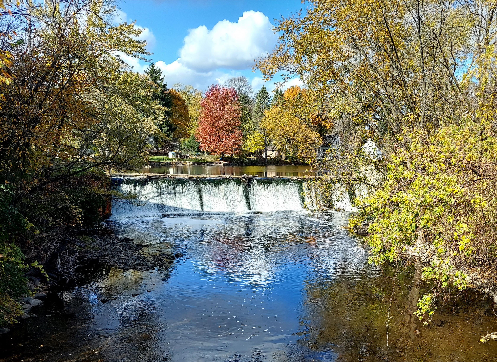

Engineering Challenges
There are a number of engineering issues facing the Woolen Mill dam

| Capacity | The spillway of the Woolen Mill dam is shown above, it stretches between two wing walls, the one on the left (west) is original to the woolen mill, and the one on the right (east) is a poured concrete wall of unknown age. The Woolen Mill dam is considered a significant hazard dam by the Wisconsin DNR. According to NR 333 a significant hazard dam must have a principal capacity of a 50 year flood and a minimum total spillway capacity of a 500 year flood. The Wisconsin DNR report lists the total capacity of the Woolen Mill dam spillway at 4,300 cfs, Mead & Hunt calculated a total spillway capacity of 3,590 cfs. In 1999 the Wisconsin Flood Insurance study listed 2,670, 4,800, 5,900, and 6,940 cfs for 10, 50, 100 and 500 year floods. The Woolen Mill dam's capacity is too small for 50, 100, and 500 year floods. Addressing this will require significant alteration, or complete removal. |
|---|---|


| Masonry and concrete | The western downstream wing wall (above left) is a limestone masonry wall original to the Woolen Mill, it is in poor shape and in need of repair, note the missing stones and undermining. In addition The concrete of the mill race and masonry of the eastern upstream wing wall (above right) is also in poor shape and is also in need of repair, note the failed stone veneer. Also there is suspect undermining to the dam toe that if confirmed also needs to be repaired. |
|---|---|
| Seepage | There is seepage in the original limestone wall as well as the rock outcrop west and downstream of the dam. |